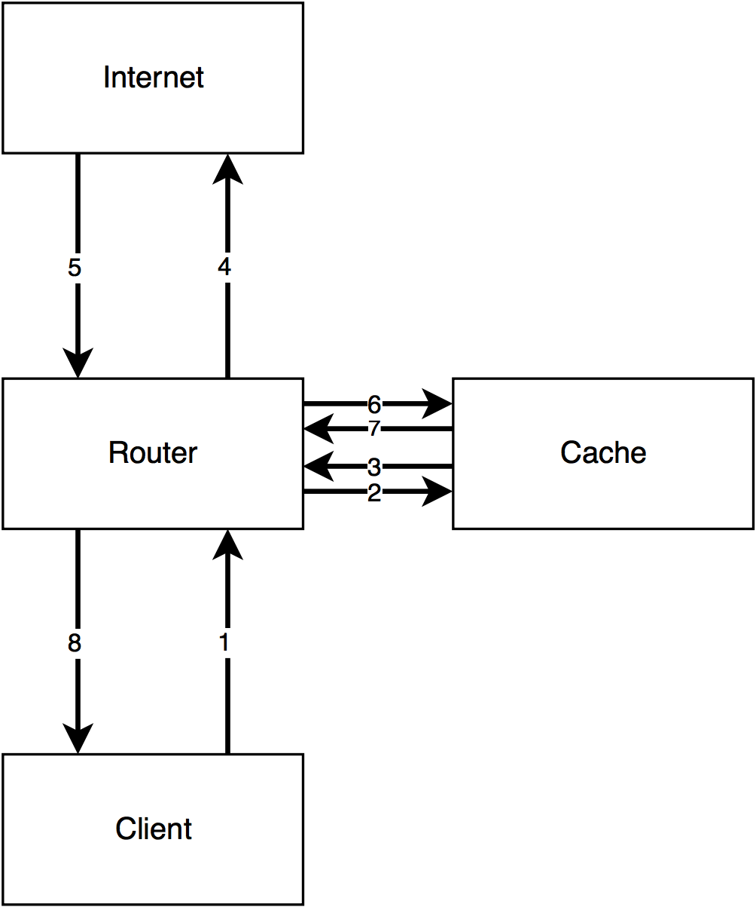

Easy packet traces using remotecap
I hate taking packet captures. I end up taking a ton of them at home and at work. Frankly, this workflow sucks:
# Oh shoot, I need to take a packet capture. dev-lappy: ssh root@somewhere.something.net somewhere: tcpdump -i any -s 0 'not port 22' -w /tmp/foo.cap # In another terminal after making the traffic I want... dev-lappy: scp root@somewhere.something.net:/tmp/foo.cap captures/something-foo.cap dev-lappy: wireshark captures/something-foo.cap
There's all kinds of garbage that can happen along the way:
- /tmp/ (or wherever you're capturing to) could fill up
- Somebody else could clobber your capture file (that's a fun one)
- You might forget to copy the new capture file over
And the whole affair just takes forever. I want live updates! I don't want to fill up precious disk space on my server! I want my capture file to be on my machine!
Enter remotecap, something I built because I was sick of this.
Here's the workflow with remotecap:
dev-lappy: remotecap -w captures/something-foo.cap somewhere.something.net # Screen is cleared and capture size and rate of growth is printed. # This can be disabled by using -q/--quiet # In another terminal dev-lappy: wireshark captures/something-foo.cap # Now, make the traffic you want to view and simply hit <C-r> in Wireshark
remotecap will ssh into the target server, run tcpdump, and then pipe the outback back over ssh to a file on your system. That's not all it can do, however!
Here's a more complicated example:
remotecap -w captures/some-weird-problem --user notroot --sudo \ --command-path /stupid/path/tcpdump --filter 'port 80 and port 443 and port 1234'\ --key ~/somerandomkey --packet-length 1234 --known-hosts None\ 10.0.0.5 1.2.3.4:2022 example.org:4561
This will run tcpdump on three machines simultaneously and put them in a folder named some-weird-problem as $HOST.cap, e.g. some-weird-problem/10.0.0.5.cap.
It also logs in as a non-root user and then uses sudo to escalate privileges on these machines. The other options are pretty self-explanatory for anyone that has used ssh or tcpdump. My favorite thing is that you can specify the ssh listening port per host using : to separate the host from the port.
Internally, remotecap is built on top of asyncio, using asyncssh to do ssh connections and stream the output, and aiofiles to allow file I/O that won't block the event loop.
Because of this, it performs pretty well. I've been able to take captures on systems that are recieving 500 Mb/s or more.
To use remotecap, you need to have python >= 3.6 on your system. remotecap has been tested on Linux and should probably work on MacOS. I have no clue if this will work on Windows, so sorry there!
To install, simply do the following:
# You could do this with system Python, but that's not really a great idea. # All file paths below are just examples. You can put this virtualenv wherever you want. dev-lappy: python3 -m venv ~/remotecap dev-lappy: source ~/remotecap/bin/activate # Make sure that you have libsodium installed. Install it using apt/dnf/pacman/zypper # This also might need a compiler if the wheels don't work. (remotecap) dev-lappy: pip install remotecap[recommends] # Bunch of garbage prints (remotecap) dev-lappy: remotecap --help
I may create packages for various distros using fpm at some point, but for now, just use pip.
If you run into any issues or just want to see the source, head on over to remotecap on Github.
Happy trails!
WCCP - Redundancy and clustering of caches and WAN optimizers
What is WCCP?
WCCP is a service offered on Cisco routers and switches that makes it simple to deploy web caches and WAN optimizers among other things. It offers a lot of functionality including failover, redundancy and clustering, and complete control of ports while requiring minimal configuration changes on the switch or router; almost all of the config is done on the cache or WAN optimizer, allowing your vendor to do what they do best. This power and configuration simplicity comes at the cost of a few pretty serious caveats. I'll get onto those, but first I need to explain how traffic flows. For those who already know WCCP, I'm going to be focusing on L2/Mask inbound redirection, so if you need guidance on GRE/Hash and/or outbound redirection, you'll want to look elsewhere. Also, this post is going to focus soley on caches. WAN optimizers have some trickery that I don't feel like covering right now, but there are some good guides out there on how to deploy those. Finally, I don't really want to cover how web caching works. I'll save that for another article.
How WCCP works (roughly)
Check out this diagram:

This is how I explain the flow of WCCP to customers. The client makes a request (1), the router redirects that request to the cache (2), the cache goes and fetches the request from the webserver via the router (3 + 4), the webserver responds to the cache (5 + 6), and finally the cache sends the response to the client (7 + 8). It's important for the traffic to flow in this "sideways T" configuration. If you don't do it this way, things will break. Next, a quick config primer.
WCCP config on the router or switch
The configuration for WCCP is stupid simple on the router. Let's say that in the example above, there are three VLANs. VLAN 10 is for the clients, VLAN 20 is for the cache, and VLAN 30 is for the internet. Next, let's say that we want to redirect port 80 TCP traffic (HTTP). WCCP uses service groups to allow you to redirect several ports at once. These can range from 0 to 100, but 0 is a special, static group that only redirects destination port 80 TCP traffic. On a router, it can also be written as web-cache. In this example, we'll use the web-cache service group. Here's what the config would look like on the router:
ip wccp web-cache interface vlan 10 ip wccp web-cache redirect in
Seems too good to be true, right? Well, yes and no. That really is everything that's needed on the router. You'll need to configure your cache however. The cache needs to inform the router that it exists and that the router should send traffic to it. The cache needs to be set up with the same service group, and it needs to have the port you want to redirect. If you're using the web-cache service group then it must be TCP dest 80. I'm not going to show you this part because the configuration for a Superlumin cache vs. a Bluecoat vs. Cisco stuff is completely different.
So, with that said here's what's happening. WCCP will watch all packets coming in on VLAN 10. When it sees a packet that matches what the cache has told it to send over (in this case, port 80), it punts it over to the cache server at which point regular routing takes over. There are a couple different ways the traffic can get sent over to the cache, but in most cases just pick L2 redirect. It's the simplest and lowest overhead option. This is also configured on the cache. Now, onto the caveats!
Caveat Emptor
-
Circular redirection
This is a really easy trap to fall into. WCCP is stupid. Like, really, really stupid. If you tell it to redirect TCP port 80 traffic then by god it's going to do it. This means that if the cache is behind the interface that's redirecting traffic (VLAN 10 in our above example) then when the cache goes to make a request out to the internet, the router will send it back to the cache, and it will cycle on and on. There are two solutions to this problem.- Have a separate VLAN for the cache and the clients
- Configure WCCP with an ACL that prohibits redirecting traffic from the cache
If I had my way, I would always, always do option 1. it's cleaner and will always work, regardless of what router or switch you have. If you have to take the second route then it's imperative that you check the docs for your router or switch, because the ACL can have different requirements. Really though, just use option 1. Please.
-
Layer 2 Adjacency
When using L2 redirection, it's important that the cache be layer 2 adjacent to the router. When I first learned this my brain immediately thought what the hell does that mean? To put it simply, no routing can happen between the cache and the router. The cache could be hooked up to the router by twenty switches and it will work fine, but if any routing has to occur then L2 adjacency is broken and no redirection will happen. You can typically see this by runningshow ip wccp <service-group> detail, although this isn't the same across all routers and switches. -
Routers gotta route, yo
WCCP doesn't operate on switched traffic. What do I mean by that? Basically, if traffic is flowing through your router or switch without being routed to that router or switch then it's not going to redirect. WCCP is not transparent in this regard, as compared to a Linux bridge sitting in the flow of traffic. In addition, the clientside and internet facing side of the router or switch must be different subnets. That device needs to route.
Final thoughts
WCCP is awesome and complicated. This post doesn't touch on a lot of the finer details of the protocol. If you're going to be working with WCCP on a regular basis, I'd recommend reading through the Cisco doc I linked at the beginning of the post.
pyroute2 - Linux networking made easy
What is pyroute2?
pyroute2 is a Python library that uses Netlink sockets to interact with the Linux networking stack. It is, in my opinion, the single best way to do anything networking related on Linux machines. Beyond simple things like replacing subprocess calls to ifconfig to get and change networking information, it offers a fantastic way to monitor networking related changes (interfaces up and down, new neighbors) and perform actions based upon those. I'll show you how to do that in this post. First, you need to understand some things about Netlink.
Netlink basics
Netlink is super cool. With it, you can register a program to receive all Netlink messages, no polling required. There are quite a few different messages that Netlink can generate. I like to represent those as an enum in Python:
from enum import Enum class NetlinkEvents(Enum): # A new neighbor has appeared RTM_NEWNEIGH = 'RTM_NEWNEIGH' # We're no longer watching a certain neighbor RTM_DELNEIGH = 'RTM_DELNEIGH' # A new network interface has been created RTM_NEWLINK = 'RTM_NEWLINK' # A network interface has been deleted RTM_DELLINK = 'RTM_DELLINK' # An IP address has been added to a network interface RTM_NEWADDR = 'RTM_NEWADDR' # An IP address has been deleted off of a network interface RTM_DELADDR = 'RTM_DELADDR' # A route has been added to the routing table RTM_NEWROUTE = 'RTM_NEWROUTE' # A route has been removed from the routing table RTM_DELROUTE = 'RTM_DELROUTE'
This is not an all inclusive list of possible messages. If you want that, this is a good place to start.
Now that we have some Netlink events defined, let's put them to use by watching for new addresses. This is where we'll use pyroute2.
pyroute2 callbacks
First things first, let's import what we need from pyroute2. There are a couple of different ways to use pyroute2, but here I'm going to use IPDB.
from pyroute2 import IPDB ipdb = IPDB() # We'll use this later import pprint pp = pprint.PrettyPrinter(indent=3)
Next, we'll make our callback. This callback needs to have 3 arguments:
def new_address_callback(ipdb, netlink_message, action): if action == NetlinkMessages.RTM_NEWADDR.name: pp.pprint(netlink_message)
The first two arguments are fairly obvious, but the third one is a bit vague. action is basically the type of message, so we can use this to filter out the stuff we don't care about. Now, we'll fire things up!
addr_callback = ipdb.register_callback(new_address_callback)
register_callback returns the ID of the callback which you'll need to cleanly stop it, so make sure you capture that! To test, we'll pop on over to a shell and add an address to eth0.
[evan@goliath ~]$ sudo ip addr add dev eth0 192.168.2.50/24
Back in Python, we should now see something like this:
{ 'attrs': [ ('IFA_ADDRESS', '192.168.2.50'), ('IFA_LOCAL', '192.168.2.50'), ('IFA_LABEL', 'eth0'), ('IFA_FLAGS', 129), ('IFA_CACHEINFO', {'ifa_valid': 4294967295, 'ifa_prefered': 4294967295, 'tstamp': 3663995, 'cstamp': 3663995})], 'event': 'RTM_NEWADDR', 'family': 2, 'flags': 129, 'header': { 'error': None, 'flags': 0, 'length': 84, 'pid': 27963, 'sequence_number': 1478380920, 'type': 20}, 'index': 2, 'prefixlen': 24, 'scope': 0}
Once you're finished, you can stop the callback as such:
ipdb.unregister_callback(addr_callback)
Nice and simple, right?
Final notes
I've used pyroute2 both professionally and personally and have found it to be a necessity when dealing with any sort of Linux networking. I've barely scratched the surface of what it can do; check out the docs if you want to see how powerful it is. It's a really great library and I wish it was used more widely.
If you find any mistakes in this post, please let me know about them by emailing me at the address in the footer. I've simplified things quite a bit here to make this post easier to digest, so if I've cut out something important I'd like to fix it.